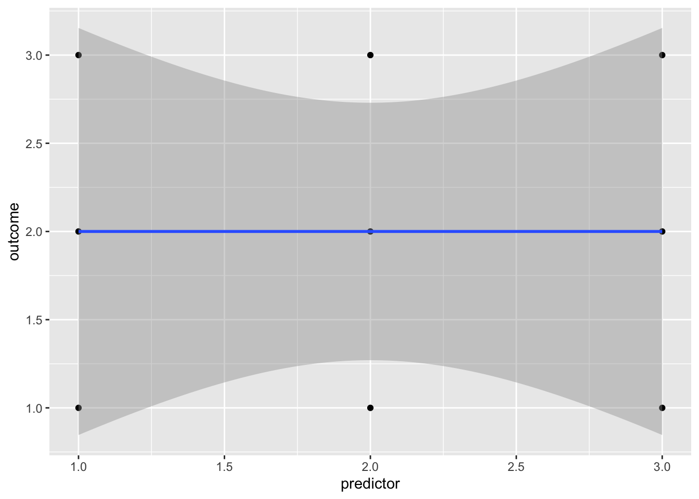
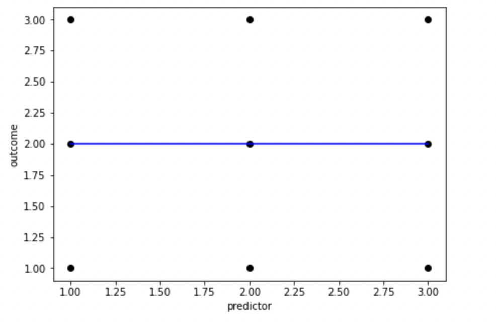
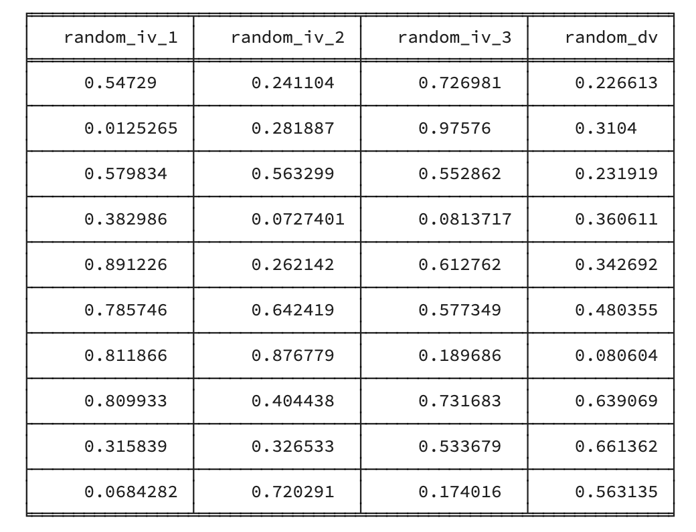
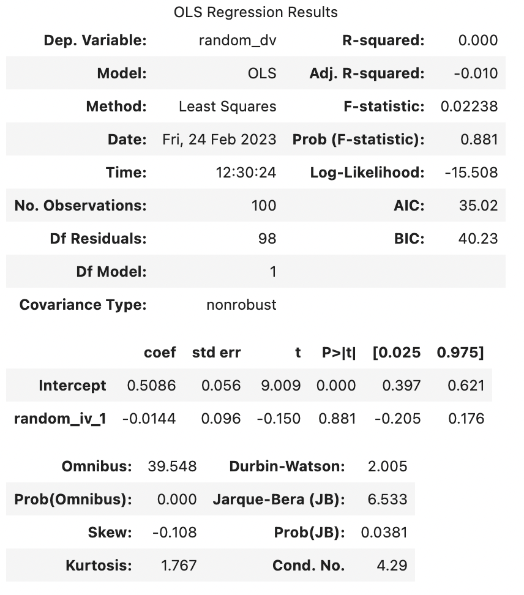
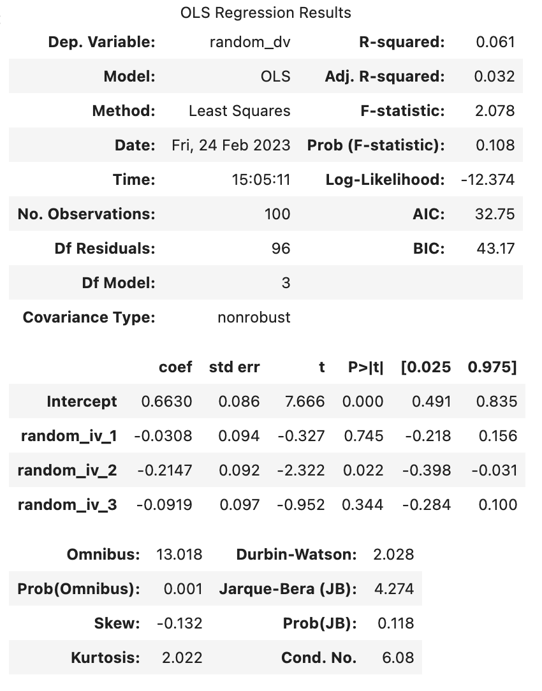

library(ggplot2)
no_association_df <- data.frame(
predictor = c(1,1,1,2,2,2,3,3,3),
outcome = c(1,2,3,1,2,3,1,2,3)
)
ggplot(no_association_df, aes(x = predictor, y = outcome)) + geom_point() + geom_smooth(method=lm, formula = 'y ~ x')
When completing a regression, there’s always a risk of “overfitting” the data, i.e. creating a model that includes predictors that have no meaningful association with the outcome variable. One reason that overfitting the data is a problem is that it is almost impossible for a predictor to have no association with an outcome variable. For that to happen you would need any data points that suggested a positive association between the outcome and the predictor to be equally balanced out by data points that suggest a negative association:
import pandas as pd
import numpy as np
import matplotlib.pyplot as plt
#sample participants in pairs
no_association_df = {
'predictor': [1,1,1,2,2,2,3,3,3],
'outcome': [1,2,3,1,2,3,1,2,3]
}
no_association_df = pd.DataFrame(no_association_df)
fig, ax = plt.subplots(figsize =(7, 5))
coef = np.polyfit(no_association_df["predictor"],no_association_df["outcome"],1)
poly1d_fn = np.poly1d(coef)
# poly1d_fn is now a function which takes in x and returns an estimate for y
plt.plot(no_association_df["predictor"],no_association_df["outcome"], 'ko', no_association_df["predictor"], poly1d_fn(no_association_df["predictor"]), '-b') #'--k'=black dashed line, 'yo' = yellow circle marker
# add title on the x-axis
plt.xlabel("predictor")
# add title on the y-axis
plt.ylabel("outcome")
plt.show()
Fig. X. An example of how unrealistically balanced your data needs to be to find no association. As this (almost) never happens in reality, samples are biased towards finding associations between predictor and outcome variables even when there aren’t any in the population. For example, let’s generate some random data, and see what R-Values we find. Remember, random data really shouldn’t have any association between predictor and outcome variables.
import random
from tabulate import tabulate
random_df = {
'random_iv_1': np.random.random_sample(size = 100),
'random_iv_2': np.random.random_sample(size = 100),
'random_iv_3': np.random.random_sample(size = 100),
'random_dv': np.random.random_sample(size = 100)
}
# convert it to a data frame
random_df = pd.DataFrame(random_df)
# print the table
print(tabulate(random_df[:10], headers=random_df.head(), tablefmt="fancy_grid",showindex=False))
random_lm <- lm(random_dv ~ random_iv_1, random_df)
random_summary <- summary(random_lm)
random_summary
Call:
lm(formula = random_dv ~ random_iv_1, data = random_df)
Residuals:
Min 1Q Median 3Q Max
-0.45521 -0.22264 -0.03548 0.15907 0.51629
Coefficients:
Estimate Std. Error t value Pr(>|t|)
(Intercept) 0.43151 0.05578 7.736 9.24e-12 ***
random_iv_1 0.06691 0.09636 0.694 0.489
---
Signif. codes: 0 '***' 0.001 '**' 0.01 '*' 0.05 '.' 0.1 ' ' 1
Residual standard error: 0.2765 on 98 degrees of freedom
Multiple R-squared: 0.004896, Adjusted R-squared: -0.005258
F-statistic: 0.4822 on 1 and 98 DF, p-value: 0.4891
Note that the above output is generated each time this page is rendered (generated), and so by chance may happen to look like the random predictor is significant. If so, there’s a 95% chance that this predictor will not be significant next time the page is rendered.
Looking at the output above, we can see that 0.4896% of the variance of random_dv was explained by random_iv_1 before correction. Considering that these were randomly generated numbers, that’s 0.4896% too much. However, the Adjusted R-squared is only -0.0053. Note that Adjusted R-squared can be a negative number, and a negative number suggests that based on the sample, the predictor(s) has(/have) no association with the outcome variable in the population.
A formula for the adjusted r-squared is:
\[ \bar{R^2} = 1-\frac{SS_{res}/df_{res}}{SS_{tot}/df_{tot}} \] \(\bar{R^2}\) is the Adjusted R-Squared \(SS_{total}\) is the Sum of Squares of the total (i.e. how much total variance there is around the mean to explain) \(SS_{res}\) is the Sum of Squares of the residuals (i.e. how much isn’t explained by the model) \(df_{total}\) is the Degrees of Freedom of the total. This is the number of data points - 1, so is N - 1 \(df_{res}\) is the Degrees of Freedom of the residuals. The degrees of freedom for the residuals takes into account the number of data points and the number of predictors, and so is N - 1 - 1
Let’s use the above formula to manually calculate the Adjusted R Squared
ss_res <- sum(random_lm$residuals^2)
ss_total <- sum(
(
random_df$random_dv - mean(random_df$random_dv)
)^2
)
random_r_square = ss_total - ss_res
df_total <- length(random_lm$residuals) - 1
df_res <- length(random_lm$residuals) -
1 - # remove 1 from the number of data points
1 # remove another 1 to reflect there being 1 predictor
adjusted_random_r_square = 1 - (ss_res/df_res)/(ss_total/df_total)
adjusted_random_r_square[1] -0.005258157ss_res = sum(random_lm.resid**2)
ss_total = sum((random_df["random_dv"] - random_df["random_dv"].mean())**2)
random_r_square = ss_total-ss_res
df_total = len(random_lm.resid)-1
df_res = len(random_lm.resid)-1 - 1
adjusted_random_r_square = 1-(ss_res/df_res)/(ss_total/df_total)
adjusted_random_r_square-0.009973456268681513The number above should match the Adjusted R-Squared from the multiple regression above. Let’s explore what happens when we have multiple predictors:
random_lm_multiple <- lm(random_dv ~ random_iv_1 + random_iv_2 + random_iv_3, random_df)
random_multiple_summary <- summary(random_lm_multiple)
random_multiple_summary
Call:
lm(formula = random_dv ~ random_iv_1 + random_iv_2 + random_iv_3,
data = random_df)
Residuals:
Min 1Q Median 3Q Max
-0.46925 -0.22762 -0.02163 0.18470 0.50771
Coefficients:
Estimate Std. Error t value Pr(>|t|)
(Intercept) 0.31166 0.10766 2.895 0.0047 **
random_iv_1 0.10009 0.09970 1.004 0.3179
random_iv_2 0.13916 0.10647 1.307 0.1943
random_iv_3 0.05933 0.09923 0.598 0.5513
---
Signif. codes: 0 '***' 0.001 '**' 0.01 '*' 0.05 '.' 0.1 ' ' 1
Residual standard error: 0.2767 on 96 degrees of freedom
Multiple R-squared: 0.02405, Adjusted R-squared: -0.006451
F-statistic: 0.7885 on 3 and 96 DF, p-value: 0.5032
Two things to look for from the above: - The model with 3 predictors has higher (Multiple) R-Squared than the model with only 1 predictor. This reflects problems with over-fitting the model: the more predictors you include in your sample, the more variance in the outcome that will be explained by the predictors, even if those associations between the predictors are arbitrary (i.e. don’t reflect anything about the general population). - Adjusted R-squared values are less susceptible to this bias of overfitting the data (but is not completely invulnerable to it). All statistical tests are vulnerable to false positives and including Adjusted R-squared values.
Remember, the adjusted r-square is necessary for us to make claims about the general population. If we just wanted to make a claim about our sample, we would just use the r-squared, as we don’t need to correct our estimate.